Selection sort is probably the most intuitive sort because it mimics how people think. The algorithm is straight-forward and can be implemented with a simple nested for loop and only a few lines of code:
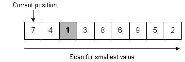
1 was found to be the smallest (after 8 compares), so it is swapped (first swap) with the
value stored at the current position (the first slot)
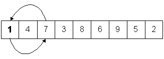
Move the current position to the right one element over and scan for the next smallest value.
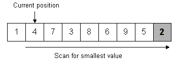
2 is the smallest (after 7 compares), so swap it with 4 (second swap).
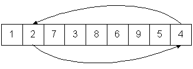
Move the current position to the right one and scan for the next smallest value.
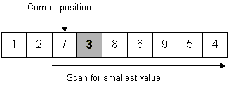
3 is the smallest (after 6 compares), so swap with 7 (third swap).
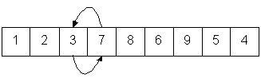
Continue the process until the last position is reached.
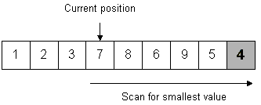
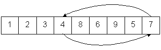
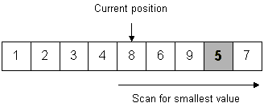
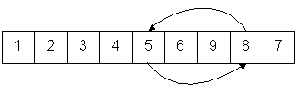
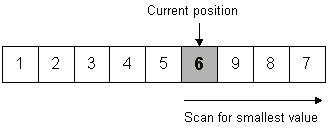
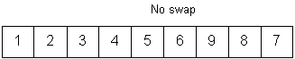
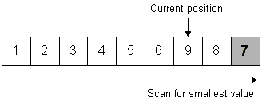
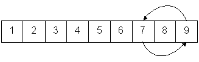
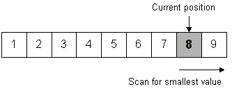
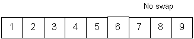
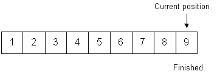
Total compares: 36
Total swaps: 6
Notes:
With an array of N items:
If the data is sorted, you can perform the search much faster using a binary search. Instead of looking at every element in the vector, you can narrow the search much faster because the data is sorted.
For example, suppose we have these 11 values in our sorted vector:
and we wish to find the value 42 in the vector. Since the vector is sorted, we can perform a very quick check to see in which "half" of the vector the number can be found.22 23 25 26 27 31 35 38 39 42 45
In the example above, if the number we are searching for22 23 25 26 27 31 35 38 39 42 45 ^ ^ ^ ^ ^ ^ ^ ^ ^ left middle right
22 23 25 26 27 ^ ^ ^ ^ ^ ^ ^ ^ ^ left middle right
35 38 39 42 45 ^ ^ ^ ^ ^ ^ ^ ^ ^ left middle right
Eventually, we will find the element, if it is in the vector. If the size of the array is even, then there will be no exact middle element. But, using integer division, you will use the result as the middle. For example, if we only had four elements in the left half, we would see this:
With L as the Left, M as the Middle, and R as the Right. It doesn't matter if the two halves are not exactly the same size, as many times they won't be.35 38 39 42 ^ ^ ^ ^ ^ ^ ^ ^ ^ L M R
More details on the binary search:
22 23 25 26 27 31 35 38 39 42 45 ^ ^ ^ ^ ^ ^ ^ ^ ^ left middle right
giving us the value 39. (5/2 is 2 and 39 is at index 2 in our new range).35 38 39 42 45 ^ ^ ^ ^ ^ ^ ^ ^ ^ left middle right
The reason it's called a binary search is because, after each comparison, we have removed half of the remaining elements from the search space. So, if we had 64 elements in the sorted vector, the most number of comparisons we would have to do is 6:
Notes:Before writing any code, figure out how many comparisons you would have to do to find the value 27 in the vector above. This will show you if you understand the algorithm or not. Writing code without properly understanding an algorithm is a sure way to fail.